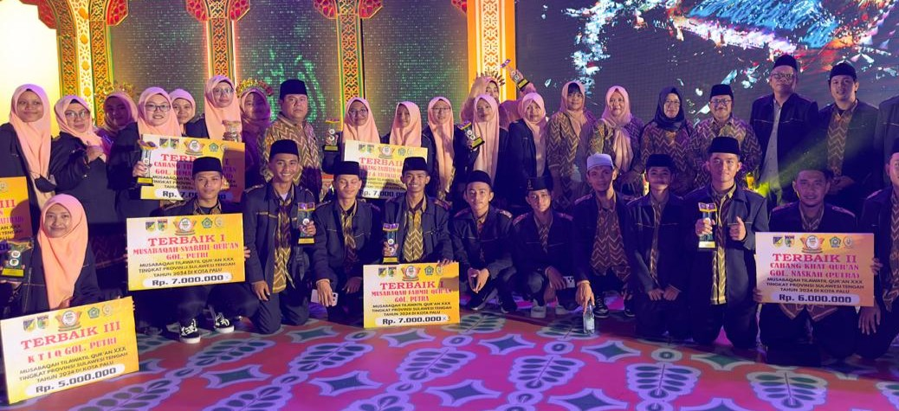
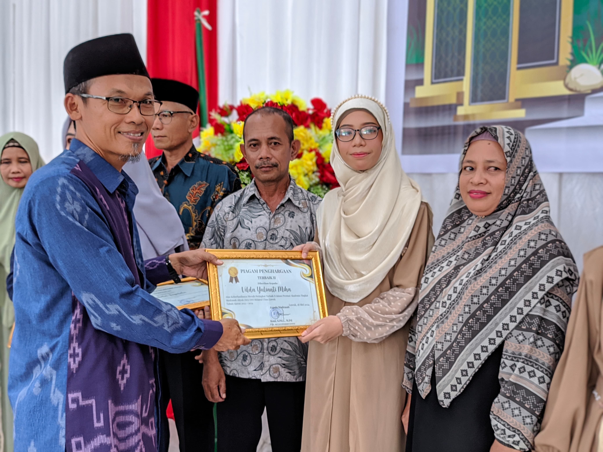

Nama : Vilda Yulianti Miha
NIM : 202512002
Program Studi : Komputerisasi Akuntansi
Saya adalah mahasiswa Program Studi Komputerisasi Akuntansi yang memiliki minat dalam bidang teknologi informasi, pengolahan data keuangan, dan pemrograman komputer. Saya senang mempelajari penggunaan aplikasi komputer untuk pekerjaan administrasi dan akuntansi agar lebih efektif dan efisien. Saya juga aktif dalam berbagai kegiatan organisasi dan senang mengeksplor hal-hal baru yang berkaitan dengan dunia digital.

